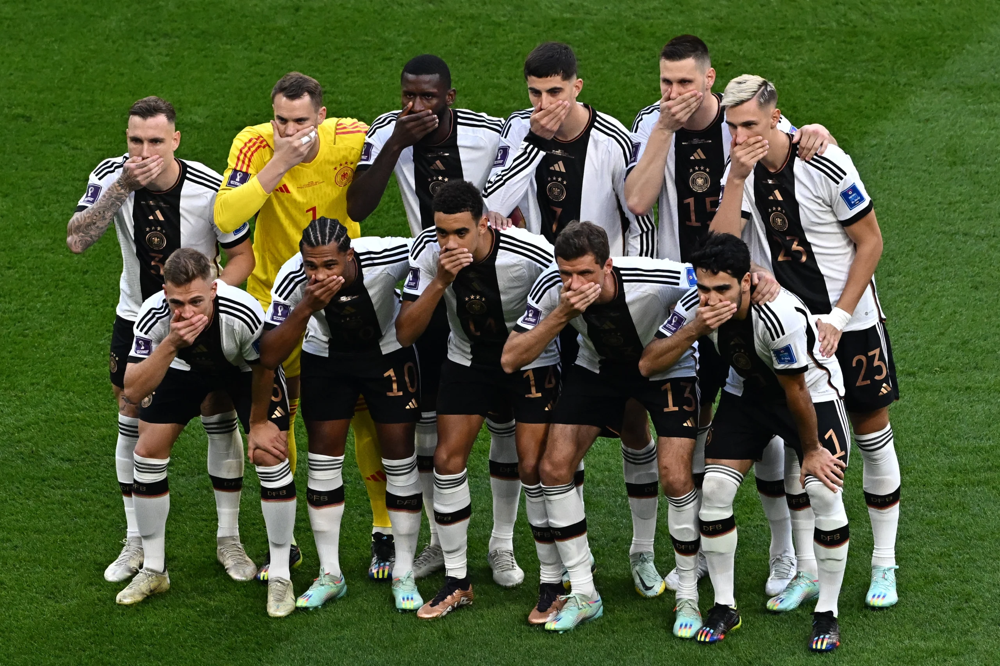

Seleção Alemã na UEFA Eurocopa
A Seleção Alemã chega a Eurocopa com o objetivo de ganhar o tetracampeonato, após ter vencido em 1972, 1980 e 1996. A seleção estrelada conta com jovens jogadores que ja atingiram o nivel mundial, como Jamal Musiala, Kai Havertz e Florian Wirtz, e super-estrelas ja conhecidas como Ilkay Gundogan, Thomas Muller e Manuel Neuer
